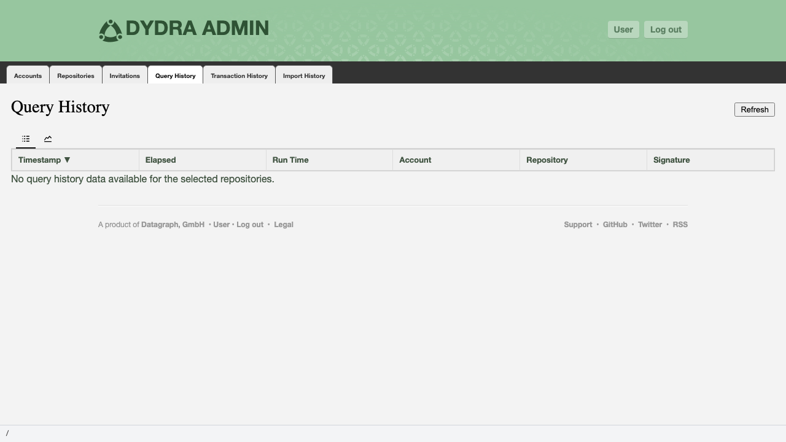
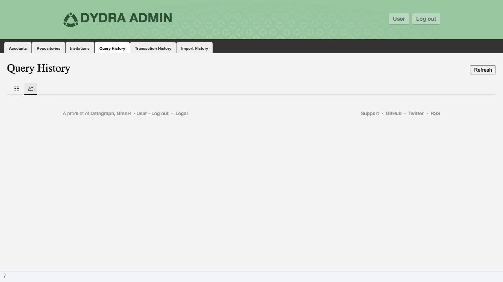
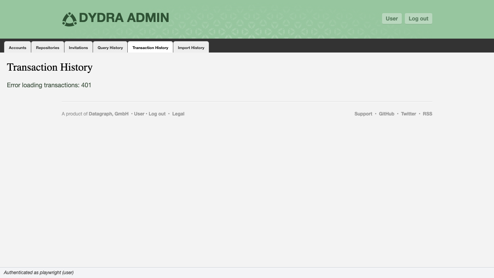
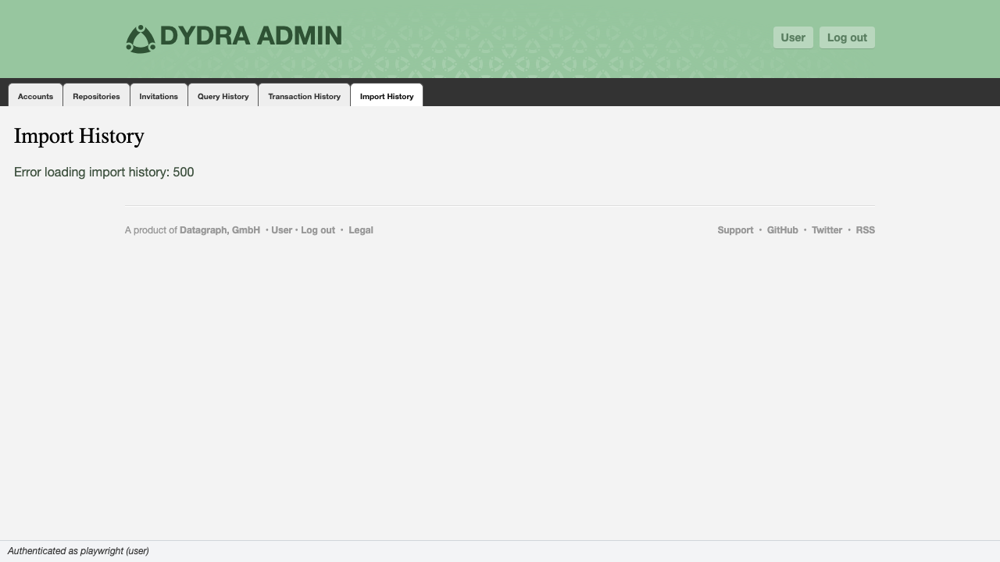
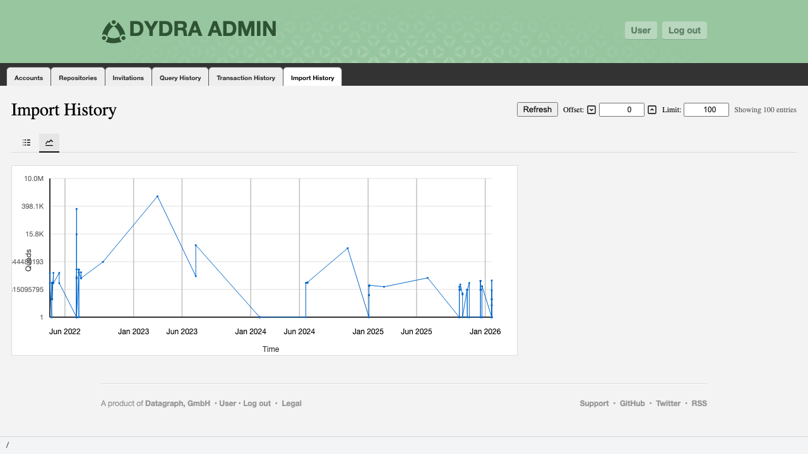

6.1 Overview
The administrative dashboard provides three history tabs covering distinct categories of system activity: query execution, data transactions, and data imports. Together these tabs constitute the system monitoring capability of the console. Access to all three tabs is available to both administrators and operators; no write operations are performed from these tabs.
| Tab | Scope | Data Source |
|---|---|---|
| Query History | SPARQL query executions for selected repositories | GET /system/accounts/{account}/repositories/{repo}/service_history |
| Transaction History | All data transactions, system-wide | GET /system/service_history/transactions |
| Import History | All import operations, system-wide, paginated | GET /system/service_history/imports?offset={o}&limit={l} |
6.2 Query History
6.2.1 Prerequisites and Navigation
The Query History tab is filtered by repository selection. To populate it:
- Select one or more accounts in the Accounts tab.
- Navigate to the Repositories tab and check the repositories of interest.
- Navigate to the Query History tab. Data is fetched automatically for the checked repositories.
If no repositories are checked, the tab displays an empty state. Changes to the repository selection trigger an automatic refresh of this tab.
6.2.2 Table View
The default view of the Query History tab is a sortable table.

Figure 6.1: The Query History tab in table view.
| Column | Type | Description |
|---|---|---|
| Timestamp | Date/time | The time at which the query execution was recorded. |
| Elapsed Time | Numeric | Wall-clock time from query receipt to response delivery. |
| Run Time | Numeric (ms, displayed as seconds) | CPU time consumed by the query execution engine. |
| Account | String | The account under which the query was executed. |
| Repository | String | The repository against which the query was executed. |
| Signature | Hash (clickable) | A content-based identifier for the query text. Click to retrieve and display the full query. See Section 6.2.4. |
Columns are sortable. Click a column header to sort ascending; click again to sort descending. A ▲ or ▼ indicator marks the active sort column and direction. The default sort order is Timestamp descending (most recent first).
6.2.3 Graph View
The Graph sub-tab renders query history as an SVG line graph.

Figure 6.2: The Query History tab in graph view, plotting run time over time.
| Axis | Variable | Scale |
|---|---|---|
| X | Timestamp | Linear time; grid interval adapts to the data range (minutes, hours, days, months) |
| Y | Run time (seconds) | Linear; maximum rounded to the nearest power-of-10 multiple |
Each data point is rendered as a clickable circle. Clicking a point opens the query detail dialog for that execution. See Section 6.2.4.
6.2.4 Query Detail Dialog
Clicking a signature value in the table, or a data point in the graph, opens the query detail dialog.

Figure 6.3: The query detail dialog displaying the full SPARQL text.
The dialog presents:
- Query signature
- Timestamp
- Account and repository
- Full SPARQL query text, fetched on demand from
GET {host}/system/service_history/queries/{account}/{signature}withAccept: application/sparql-query
Close the dialog by clicking outside it or pressing Escape.
6.2.5 Controls
| Control | Function |
|---|---|
| Refresh | Re-fetches query history for the currently selected repositories. Invalidates the tab's cached data. |
| Table / Graph | Switches between the tabular and graphical presentations of the same dataset. |
6.3 Transaction History
6.3.1 Overview
The Transaction History tab presents a system-wide log of data transactions — operations that inserted or removed RDF quads from any repository. This tab requires no upstream selection; it fetches from a single global endpoint and displays results for all accounts and repositories.

Figure 6.4: The Transaction History tab.
6.3.2 Table Structure
| Column | Type | Description |
|---|---|---|
| Timestamp | Date/time | When the transaction was recorded. |
| UUID | Monospace string | The unique transaction identifier. |
| Account | String | The account under which the transaction occurred. |
| Repository | String | The repository on which the transaction operated. |
| Insert Count | Numeric | Number of quads inserted by this transaction. |
| Remove Count | Numeric | Number of quads removed by this transaction. |
| Agent Key | String | Identifier of the authenticated agent that initiated the transaction. |
| Agent Tag | String | Descriptive tag associated with the agent. |
All columns are sortable by clicking the column header. Numeric columns (Insert Count, Remove Count) sort numerically. The default sort is Timestamp descending.
6.3.3 Controls
| Control | Function |
|---|---|
| Refresh | Re-fetches all transaction history from /system/service_history/transactions. |
6.4 Import History
6.4.1 Overview
The Import History tab presents a paginated log of data import operations. Like Transaction History, it covers all accounts and repositories system-wide. Pagination controls allow navigation through large datasets without fetching the entire history at once.
6.4.2 Table Structure

Figure 6.5: The Import History tab in table view.
| Column | Type | Description |
|---|---|---|
| Timestamp | Date/time | When the import operation was recorded. |
| UUID | Monospace string | The unique import operation identifier. |
| Account Key | String | The account under which the import was performed. |
| Repository Key | String | The repository into which data was imported. |
| Agent Key | String | Identifier of the agent that performed the import. |
| Source URI | URI (truncated with ellipsis if long) | The location from which the data was sourced. |
| Quad Count | Numeric | Number of RDF quads successfully imported. |
| Success | Yes / No | Whether the import operation completed without error. |
All columns are sortable. The Quad Count column sorts numerically. The default sort is Timestamp descending.
6.4.3 Pagination
Import history is retrieved with explicit offset and limit parameters: GET {host}/system/service_history/imports?offset={offset}&limit={limit}. The pagination controls allow navigation through the complete dataset.
| Control | Function |
|---|---|
| Offset input | Sets the zero-based index of the first entry to retrieve. Changing this value triggers an automatic fetch. |
| Limit input | Sets the number of entries per page. Accepted range: 1–1000. Changing this value triggers an automatic fetch. |
| Previous | Decrements the offset by the current limit value (minimum: 0). Triggers a fetch. |
| Next | Increments the offset by the current limit value. Triggers a fetch. |
| Refresh | Re-fetches the current page with the current offset and limit. |
The entry count display reads "Showing N entries" and reflects the count of entries in the current page, not the total in the system.
6.4.4 Graph View
The Graph sub-tab renders import history as an SVG line graph.

Figure 6.6: The Import History tab in graph view, plotting quad count over time.
| Axis | Variable | Scale |
|---|---|---|
| X | Timestamp | Linear time; grid interval adapts to the data range |
| Y | Quad count | Logarithmic; accommodates the wide dynamic range typical of import operations |
6.5 Sorting Behaviour (All History Tabs)
The following rules apply uniformly across the three history tables:
- Click a column header to sort ascending by that column. A ▲ indicator appears.
- Click the same header again to reverse the sort to descending. The indicator changes to ▼.
- Sorting is performed client-side on the currently loaded dataset; it does not trigger a new server request.
- Columns containing numeric data (counts, run times) sort numerically. All other columns sort lexicographically.
- Sort state is not preserved across Refresh operations; the table reverts to its default sort after a refresh.
6.6 Proceeding
- API endpoints, keyboard shortcuts, and terminology — Appendices
- Return to Manual Home